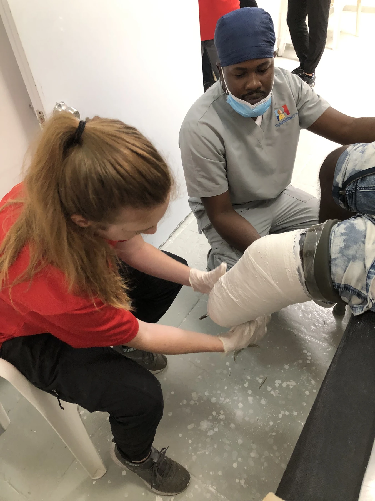
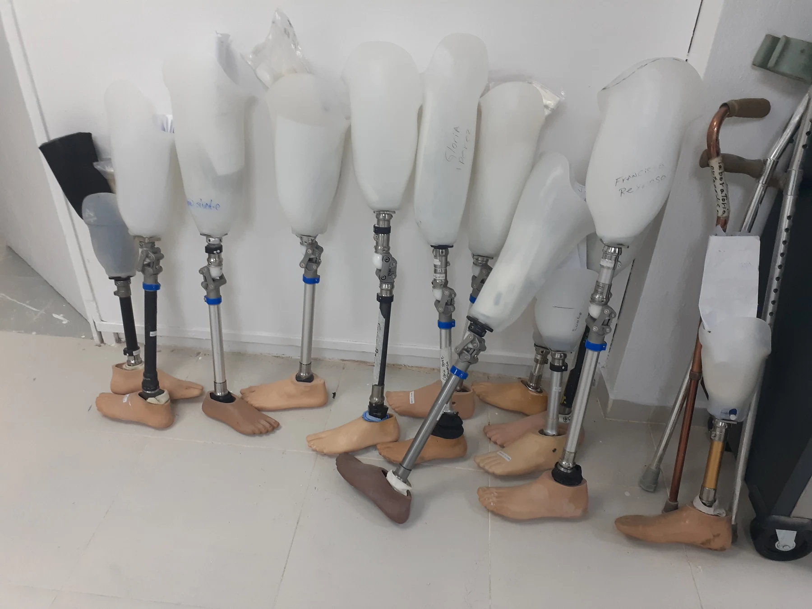
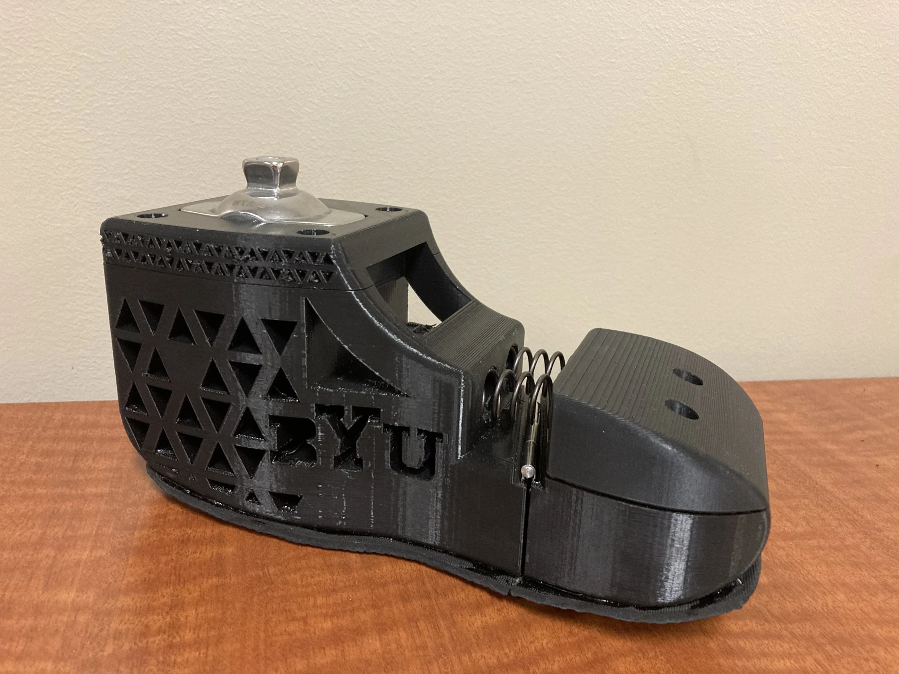
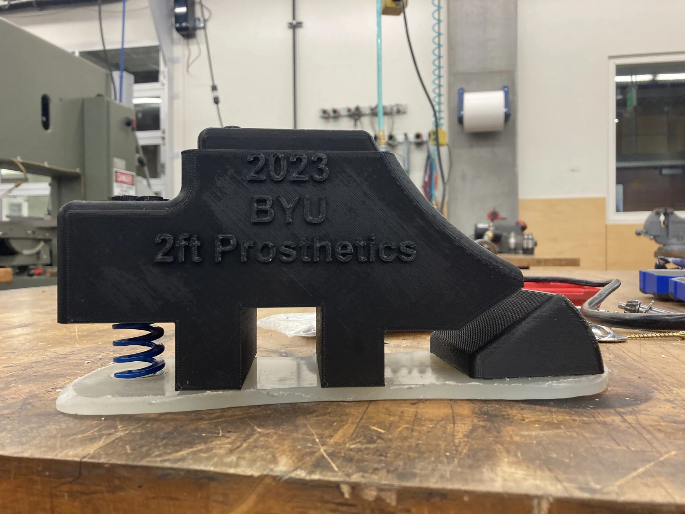
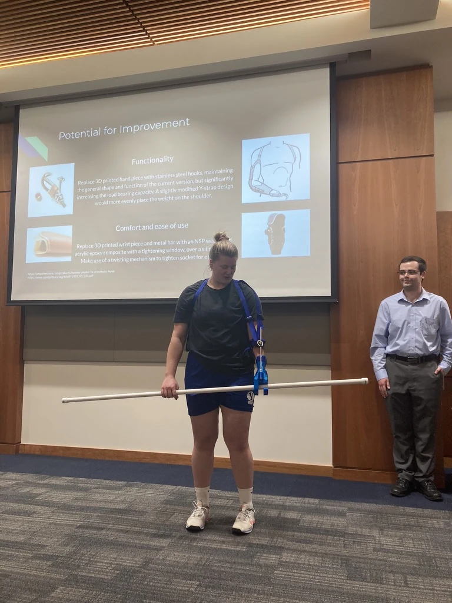
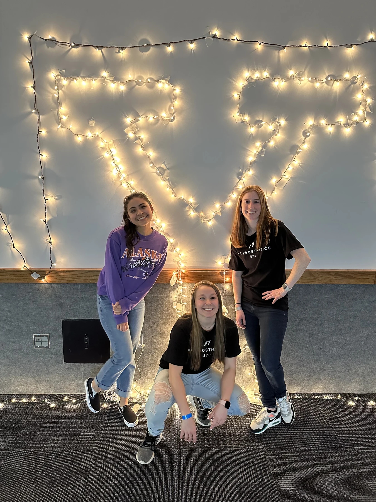
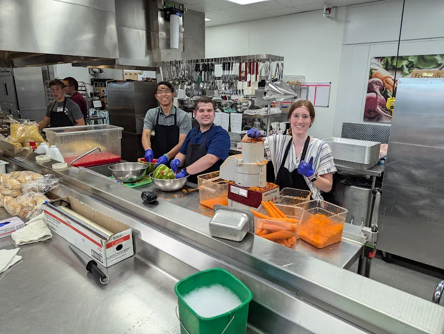

2FT Prosthetics
2FT Prosthetic Experience
Through 2FT Prosthetics, I connected hands-on fabrication with student design and community service: clinical work in the Dominican Republic, two prosthetic-foot competitions, and club leadership at BYU.

Clinical experience · Dominican Republic
During a week at Rehabilitación in August 2024, I worked alongside clinicians on measurements, plaster casting, socket thermoforming, component assembly, and fitting.




3D-printed foot designs
I participated in two 3D-printed prosthetic-foot competitions, exploring affordable, functional designs.




Club leadership & volunteering
- As BYU 2FT Prosthetics Club vice president, organized a design competition for a rugby athlete born without part of her hand, focused on Olympic-style weightlifting.
- Planned and ran fundraising dances during BYU’s Care Week in 2022 and 2023.
- Volunteered in the kitchen at a 2FT Prosthetics event hosted by Edwards Lifesciences.






Skills: Prosthetic fabrication, Human-centered design, Leadership